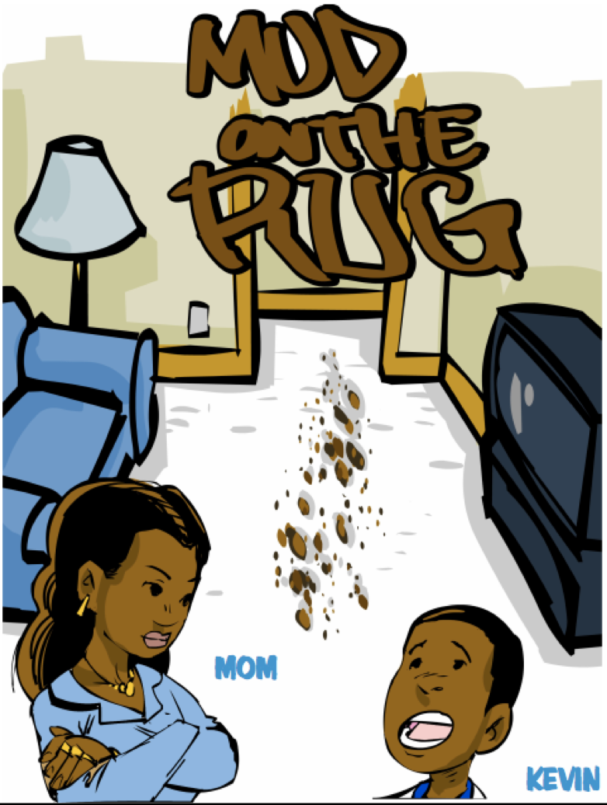

Projects
Penn Reading Initiative Rethinking the way children are taught to read View publications
The Penn Reading Initiative (PRI) is a tutoring program developed by the Sociolinguistics Lab to raise the reading levels of urban elementary school students. PRI tutors use The Reading Road, a curriculum that includes lessons, stories, and games designed to engage the interest in reading of inner-city kids.
Our mission is to apply sociolinguistics knowledge to improve the teaching of reading in inner-city schools. Consideration for the home language of these students distinguishes PRI from other research-based reading programs. Visit the PRI website to learn more.
Philadelphia Neighborhood Corpus Largest collection of reports and records of any speech community View publications
Since 1972, W. Labov (later with G. Sankoff) has been teaching a bi-yearly course at the University of Pennsylvania entitled “The Study of the Speech Community” (LING560). The LING560 reports and records comprise by far the largest single sociolinguistic corpus of any speech community.
The recordings and transcriptions of the Philadelphia Neighborhood Corpus (PNC) have been archived at the Sociolinguistics Lab and are currently being expanded on by the ongoing NSF research project “Automatic Alignment and Analysis of Linguistic Chance” (NSF grant 921643 to W. Labov).
The PNC represents over 100 years of sound change and comprises data from 418 different speakers. Access to the PNC is restricted to members of the research group. For information on how to become a member of the research group, please contact W. Labov at [email address].
Influence of Higher Education on Local Phonology Examining the effect of institutions on local phonology View publications
The Influence of Higher Education on Local Phonology (IHELP) is part of an ongoing NSF research project (NSF grant 999999 to W. Labov). This project examines the effect of different institutions of higher education on local phonology.
Early work (Prichard and Tamminga 2010) has found that the orientation of the institution (eg. nationally-oriented or locally-oriented) has a significant effect on the amount of leveling of local phonology.
The IHELP project expands on this work, aiming to provide insight into when children abandon local phonology in favor of a more nationally-oriented phonology. Interested in contributing to IHELP? Please contact W. Labov at [email address].